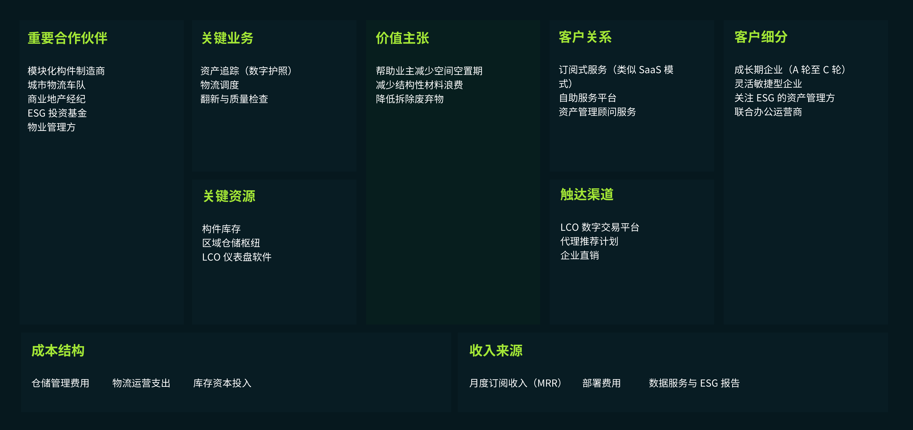
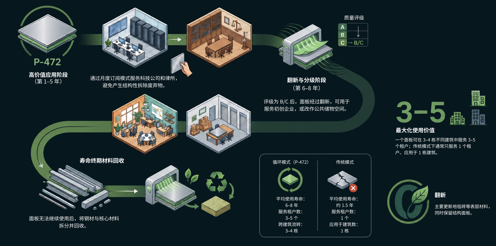

资本占用与资产闲置
运营方需要持有大量组件；这些资产会折旧，也可能长期闲置。如果利用率达不到预期，模式就可能面临亏损。
与 Workplace Futures Group 合作，研究办公空间的持续使用、家具配置与服务运营模式。
租期、团队规模与使用方式不断变化，办公空间却常将家具与配置视为一次性资产。项目关注的不是再设计一套家具，而是把空间调整转化为可持续运营的服务。
办公装修可分为业主交付的 CAT A 基础设施与租户定制的 CAT B 空间配置。前者包括地板、吊顶、照明等，后者涉及隔断、家具与品牌表达。两者需求不匹配时，仍可使用的材料也可能被拆除。因此，问题不只在材料回收，更在租户交接时缺少持续的资产管理。
分析焦点：不只是材料能否回收，而是谁在租户交接时继续管理它。
当租户需求改变，配置更新、资产维护与品牌表达如何协同，而不是每次都重新采购与装修？
若由第三方持有与运营办公物件，服务责任、交付触点和成本收益需要重新定义。
我带领团队开展政策调研、竞品分析与利益相关者梳理。对照 NORNORM、Ahrend、FIS 等案例，从资产归属、服务交付、空间适应性与运营机制四个维度，分析循环服务如何持续。
FIS Project Reuse 将拆下的天花系统与灯具用于另一项目，证明跨项目再利用可以落地。但单次转用并未自动解决后续盘点、拆卸、仓储、匹配与维护的责任。由此，我把核心问题界定为“责任连续性”：需要一个长期管理主体，让循环不再依赖个别项目推动。
案例启发 → 识别交接断点 → 设计持续运营主体；这是从研究发现到方案选择的推导。
图中橙色区域指向一个容易被忽略的阶段：租户 A 已结束使用，租户 B 却还没有接收组件。材料仍有使用价值，并不意味着它会自然进入下一个项目。退租时间、下一位租户的需求和组件状态未必吻合；如果没有明确的交接安排，盘点、拆卸、存放和重新配置就可能彼此脱节。
信息责任：谁记录组件的数量、规格、位置、损耗和维修历史？缺少这些信息，下一项目就难以判断组件是否适用，也无法提前安排配置。
实物责任：谁组织拆卸、运输、检修与仓储？即使找到潜在使用方，也需要有人衔接不同项目的时间差，避免组件在等待期间损坏、遗失或被直接清走。
决策与成本责任：谁决定组件继续使用、翻新还是退出循环，谁承担暂存、维修和再次部署的成本？如果这些问题只在退租时临时协商，再利用就难以成为稳定流程。
一次跨项目转用说明材料可以被重新使用，却不等于每一次租户更替都能顺利衔接。这里不是否定案例的价值，而是进一步追问：当原来的项目团队退出后，这套流程由谁继续推动？由此，分析重点从“为材料找到下一站”，转向“为连续流转建立明确的责任主体”。
方案将交接设计为持续服务：退租前整理组件清单与状态；退出使用后安排回收、检查、分级及必要的翻新；再根据下一项目的规格和时间要求完成匹配与部署。数字护照承接信息，仓储与检修承接实物，LCO 统筹各阶段的执行，让管理责任不随单次租约结束而消失。
这也意味着，数字护照本身并不能解决断点：记录必须有人更新，组件必须有人维护，闲置与周转成本也必须有人承担。上述责任分工是基于案例分析提出的方案回应，具体交接规则、成本分担与执行效果仍需通过后续企业试点验证。
梳理循环经济与办公资产再利用的政策背景，明确模式成立的外部条件。
比较竞品的产品、运营与价值主张，识别单纯租赁与系统服务的差异。
将业主、租户、运营方与供应链放在同一服务关系中，识别责任和潜在阻力。
比较框架同时关注两端：短租用户需要快速启用、灵活调整；服务方需要管理资产、交付与运营。能否兼顾两端，是判断方案可行性的关键。
比较家具由租户购买，还是由服务方持有并提供使用。资产归属会影响前期投入、维护责任、闲置风险，也决定了服务方是否有动力持续管理和回收物件。
把需求沟通、空间测量、方案配置、配送安装、使用维护、调整回收看作一条完整链路。若只解决交付而缺少后续支持，灵活性就难以真正落到使用过程中。
分析标准化模块能否支持团队规模、工作方式与租期变化。基础配置需要足够稳定，组合方式又要留有调整空间，避免“可循环”变成有限选项的重复套用。
将资产利用率、周转频次、运输维护与翻新成本放入同一运营视角。循环使用不只取决于产品耐用，也依赖回收、检修、仓储和再次配置等后台能力。
以上为项目中的分析维度与方案判断框架，不代表对各品牌运营表现的量化评价；项目未提供可比的公开运营数据。
机会点聚焦于需要快速入驻的短租用户。他们需要的不是拥有更多家具，而是及时获得可靠、可调整的空间配置。
架空地板被选为首个验证对象，因为其尺寸与安装方式相对标准化，通常可无损拆装。结构面板与支座可纳入循环服务，地毯、饰面则由租户选择，兼顾重复使用与个性表达。这也为未来扩展至吊顶、照明提供起点，但尚不是已验证的全品类方案。
“让空间随使用而变化，
而不是让使用迁就空间。”
团队提出由 LCO（London Component Operator）统筹组件的跨楼宇流转，使所有权与单栋建筑脱钩。方案中，制造商可保留所有权，业主付费接入网络，租户按需订阅；LCO 负责数字护照、仓储、分级、维护与调配。
明确交接责任，才能将单次回用转为持续服务。商业可行性仍取决于资产利用率、周转速度与仓储、物流、翻新成本的平衡。
制造商持有、租户使用、LCO 管理、业主接入：把容易中断的资产关系转化为持续的服务关系。图示为团队方案中的角色分工。
提供可快速交付的标准化办公基础设施，降低初次入驻的时间与采购负担。
根据团队规模与工作方式调整组合，并通过服务机制支持持续更新。
在标准化基础上保留差异化表达，让空间仍能承载组织文化与品牌身份。
通过成本与收益测算讨论资产持有、运营频次及规模化的可行边界。
从一次性装修，转向按需配置、持续维护与循环使用的服务体验。
租用已接入 LCO 网络的办公空间，获得共享组件池的使用渠道。
LCO：开放组件资源通过平台选择地板、吊顶与照明等组件；制造商保留所有权，LCO 承担管理责任。
LCO：匹配所需组件按订阅付费，无需买断材料。组件通过数字护照追踪，并获得持续维护。
LCO：追踪与维护根据团队变化升级、更换或重新组合组件，减少不必要的拆除与浪费。
LCO：调整与重新配置组件由 LCO 回收、检查与翻新，再投入后续项目，责任不随租户离开而中断。
LCO：回收与再次部署72 小时为方案中的配置选择目标，需经后续企业试点验证，并非已验证的安装交付承诺。
围绕组件循环服务，梳理合作网络、关键运营能力、客户价值与收入来源。

以 P-472 面板为例，展示组件如何在不同租户与建筑间流转，并在寿命终期进入材料回收。

运营方需要持有大量组件；这些资产会折旧，也可能长期闲置。如果利用率达不到预期，模式就可能面临亏损。
网络要运转，需要足够多的楼宇加入，也需要足够多的组件进入共享池。两者必须同时增长，形成较高的启动门槛。
原图指出，在格伦费尔火灾之后，英国建筑安全法规对再利用构件的消防安全与责任合规提出要求。实际适用范围需结合构件类型、建筑用途及项目所在地核实。
部分材料制造商和承包商的收益仍依赖新产品销售；如何让循环服务与现有供应链协作，是模式推广需要面对的问题。
让市场接受“经过再利用的空间仍然具有高品质与溢价价值”，需要改变对二手材料和循环空间的既有认知。